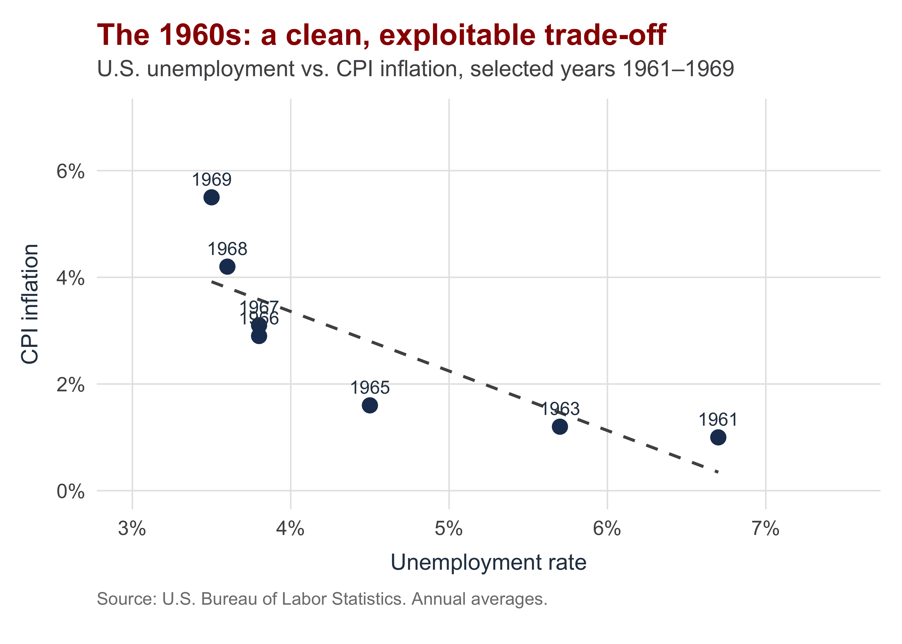
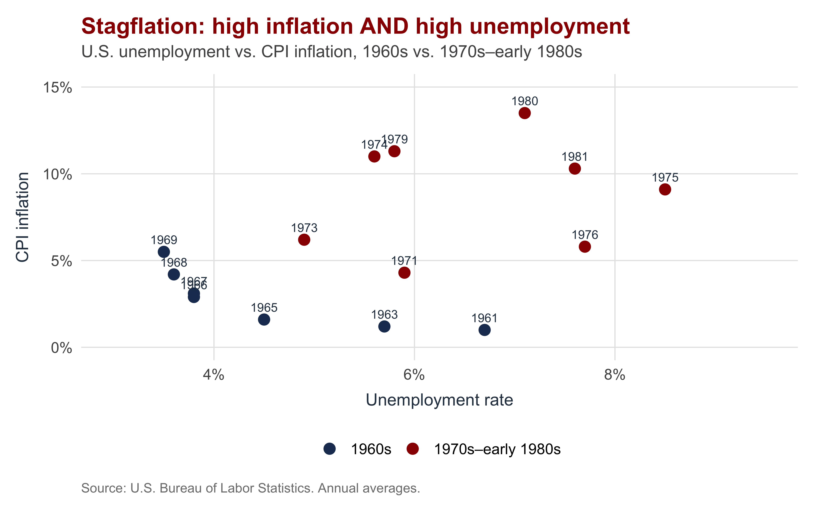
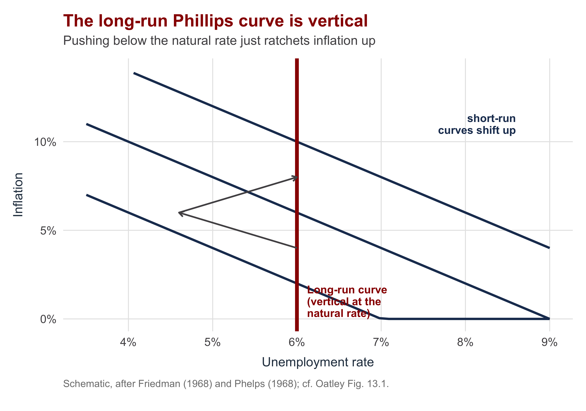
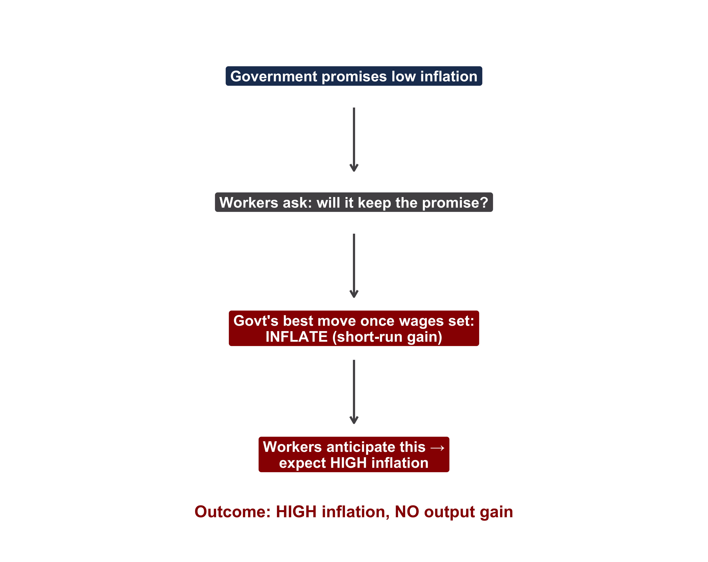
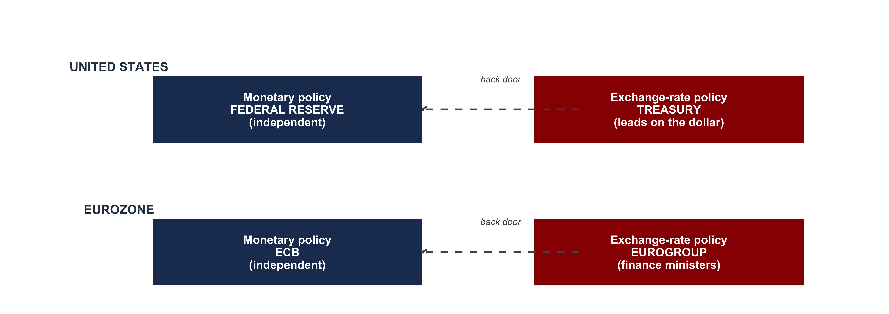

| Section | What we'll cover |
|---|---|
| 1 · When Society-Centered Logic Runs Out | Three policies no domestic coalition wanted |
| 2 · The Economics: The Phillips Curve Breaks Down | Stagflation, the natural rate, and the accelerationist principle |
| 3 · The Time-Consistency Problem | Why a government's low-inflation promise isn't believed |
| 4 · Credible Commitment & Central-Bank Independence | Delegating to an independent bank as a commitment device |
| 5 · The Exchange-Rate Back Door | Why governments keep one hand on exchange-rate policy |
| 6 · State Interests Beyond Credibility | Balance of payments, reserve-currency status, statecraft |
| 7 · Two Frameworks Side by Side | Society-centered vs. state-centered — and Quiz 3 review |
A State-Centered Approach to Monetary Policy
INTL 503 | Chapter 13
Professor Sarah Bauerle Danzman
July 24, 2026
Today’s Plan
Today’s Big Question
Why would a democracy deliberately take monetary policy out of the hands of its elected officials?
When Society-Centered Logic Runs Out
Section 1
Yesterday’s Framework — and Where It Stops
Chapter 12 (yesterday)
Monetary and exchange-rate policy is the resolution of domestic distributional conflict.
- Exporters and import-competers want a weak currency
- Finance and nontradeables want a strong one
- Policy reflects whichever coalition wins
This explains a great deal — partisan differences, sectoral lobbying, the electoral cycle.
But some real policies fit no winning coalition:
- A government tightens into high unemployment, hurting organized labor
- A country pegs to a stronger currency at real domestic cost
- The U.S. tolerates an overvalued dollar despite manufacturing pain
If no domestic group wanted these, who did? Today’s answer: the state itself, acting on interests of its own.
Three Puzzles for the Society-Centered Account
| Policy puzzle | What happens | Where we see it |
|---|---|---|
| Tightening into a recession | A government raises rates and squeezes the economy while unemployment is high and labor is organized | Disinflation under Thatcher (UK) and Volcker (US), c. 1979–82 |
| Pegging to a stronger currency | A country fixes to a harder currency, accepting an overvalued rate that hurts its own exporters | France's franc fort, 1983 onward — kept inside the EMS at heavy domestic cost |
| Tolerating an overvalued currency | The U.S. lets the dollar stay strong even as import competition hollows out manufacturing | The dollar's reserve-currency role generates a state interest no exporter shares |
Each row is a case the society-centered model struggles with. By the end of class you should be able to give the state-centered account of each — and say where the two frameworks diverge.
The Economics: The Phillips Curve Breaks Down
Section 2
Yesterday’s Lever: The Short-Run Phillips Curve
The Phillips curve describes a short-run trade-off between inflation and unemployment: a government can buy lower unemployment by accepting higher inflation.
- This is the lever behind the electoral model — loosen before an election to lower unemployment
- And the partisan model — the left tolerates inflation to fight unemployment
- In the 1960s U.S. data, the trade-off looked stable and exploitable

If this trade-off is permanent, a government can pick a point on it and stay there — buying permanently lower unemployment with a bit more inflation.
The 1970s Broke the Curve: Stagflation

The 1970s delivered high inflation and high unemployment at the same time — stagflation. No single downward-sloping curve can fit these points.
The curve didn’t vanish — it shifted up. Each attempt to ride the trade-off lifted the whole curve, leaving the same unemployment with more inflation.
Why the Curve Shifts: Natural Rate & Accelerationism

Natural rate of unemployment — the economy’s long-run equilibrium rate, set by labor-market structure (skills, unions, regulation), not by monetary policy.
Accelerationist principle — to hold unemployment below the natural rate, a government must make inflation continually accelerate. The long-run Phillips curve is vertical.
The payoff: monetary policy buys no permanent drop in unemployment — only ever-rising inflation. So why use it for that at all?
The Time-Consistency Problem
Section 3
The Core Problem: Promises a Government Can’t Keep
The time-consistency problem (Kydland & Prescott 1977): the best action at a moment differs from the best action in general.
A government’s plan over time:
- Promise low inflation, so workers set low wage demands
- Once wages are set, renege — inflate to push unemployment down for a short-run gain
- Workers know this in advance, so they never believe step 1
Sarah’s intuition pump: “I’ll start the diet on Monday.” Sincere today — but when Monday comes, the cake is right there. Knowing that, no one plans their week around my promise.

Credible Commitment & Central-Bank Independence
Section 4
The Solution: Tie Your Own Hands
Credible commitment — a promise the public has reason to believe will be kept, because the government has removed its own ability to renege.
The leading commitment device:
Central-bank independence — the degree to which the central bank can set monetary policy free of government interference: free to choose its goal, free to choose its tools, and insulated from reversal.
Its mandate is price stability — a low, steady inflation rate as the bank’s overriding objective.
Other commitment devices
- Fixed exchange rates / currency boards — pegging to a low-inflation anchor imports its discipline
- Euro membership — monetary policy handed to the ECB; no national money to inflate
All work the same way: the government gives away the power to inflate, so its promise no longer depends on resisting tomorrow’s temptation. The diet works if you don’t keep cake in the house.
The Evidence: Independence and Lower Inflation

The most-cited figure in this literature: across ~16 advanced democracies, more independence lines up with lower average inflation — Germany and Switzerland low, Italy and Spain high.
The standard caution: this is a correlation. Independence may be a proxy for a society that is already inflation-averse — a country that hates inflation may both build an independent bank and run low inflation for the same underlying reason.
The Exchange-Rate Back Door
Section 5
Two Sides of One Coin — and Who Holds Each
Even where an independent central bank runs monetary policy, governments usually keep exchange-rate authority. Since the two are linked, that is a back door to pressure the bank.

A government wanting looser policy can push the exchange rate the bank is trying to defend — forcing the bank’s hand. Independence on paper is not independence in practice.
State Interests Beyond Credibility
Section 6
State Interest #1: The Balance-of-Payments Constraint
A state must be able to pay its foreign bills — for imports and external debt — regardless of what domestic groups prefer.
- Persistent current-account deficits drain reserves (recall Day 9’s identity, (S − I) = (X − M))
- When reserves run low, adjustment is forced — devaluation, austerity, or an IMF program
- No domestic coalition “chose” it; the constraint chose it
The UK, 1976. A sterling crisis drained reserves and forced Britain to seek an IMF loan — and accept spending cuts a Labour government did not want. The balance-of-payments constraint overrode domestic preferences.
Mexico 1994 and Argentina 2001 are the same logic in sharper form — external constraints forcing adjustment no government would have chosen. (We return to these in Week 4.)
State Interest #2: Geopolitics and Statecraft
Currency policy is also an instrument of national power.
- Reserve-currency status — the dollar’s “exorbitant privilege”: the U.S. borrows cheaply and projects financial power because the world holds dollars
- Currency as statecraft — exchange-rate policy, sanctions, and access to payment systems as strategic tools
- The euro — a political project, not only an economic one
- RMB internationalization — China building an alternative to dollar dependence
Back to China. The society-centered story (exporters want an undervalued yuan) is right as far as it goes — but it can’t explain why managed currency policy persists when the coalition shifts.
The state-centered story fills the gap: a managed currency and a growing RMB role serve strategic positioning — reducing dependence on the dollar — an interest the state holds as a state.
🎧 This week’s podcast — The Sanctions Age: “How the Strong Dollar Became the Weaponized Dollar,” with Saleha Mohsin (Bloomberg; author of Paper Soldiers) — how the U.S. Treasury turned the dollar into an instrument of national security.
A Note of Caution: Prescriptive, Not Explanatory
The state-centered approach is strong on what raises welfare (independence lowers inflation) but weak on why governments actually choose to bind themselves.
The tension Oatley flags
- The whole argument rests on the claim that elected officials care more about short-term gains than long-run welfare
- Yet to explain why they create independent banks, we’d have to assume they act for long-run welfare after all
- That sits uneasily with the premise
So the approach tells us independence is welfare-improving — a prescription — but is weaker as an explanation of the political choice to adopt it.
It also says little about why central bankers themselves would prioritize price stability.
Two Frameworks Side by Side
Section 7 · This is your Quiz 3 review
Society-Centered vs. State-Centered
Listen up — this slide is your Quiz 3 review. Be able to reproduce this comparison and to apply it to a short scenario.
| Dimension | Society-centered (Ch 12) | State-centered (Ch 13) |
|---|---|---|
| Unit of analysis | Groups within the state | The state itself |
| What drives policy | Distributional conflict; coalition outcomes | Credibility, balance of payments, geopolitics |
| Best at explaining | Variation across democracies; partisan policy | Common adjustments under crisis; commitment devices |
| Where it struggles | Crisis adjustments no group wanted | Within-democracy variation across regimes |
The integrative question (final-exam style): pick a contemporary monetary decision — the Fed’s 2022–23 tightening, the ECB and the euro crisis, China’s managed yuan — and explain it with both frameworks. Where do they converge? Where do they diverge?
Recap & Quiz 3 Logistics
Today’s Big Question — Why would a democracy deliberately take monetary policy out of the hands of its elected officials?
What we built
- The Phillips curve broke in the 1970s — the long-run curve is vertical at the natural rate (accelerationist principle)
- The time-consistency problem: a government can’t credibly promise low inflation on its own
- Central-bank independence is a credible commitment device aimed at price stability
- State interests — balance of payments and geopolitics — round out the account
Quiz 3 — logistics
- Covers Chapters 10–13 (the whole monetary unit)
- Ch 10: the trilemma and terminology
- Ch 11: cooperation and the IMF / regional institutions
- Ch 12–13: identify which framework — society- or state-centered — fits a short scenario
Short break, then the quiz. Bring the comparison table in your head.

INTL 503 | A State-Centered Approach to Monetary Policy